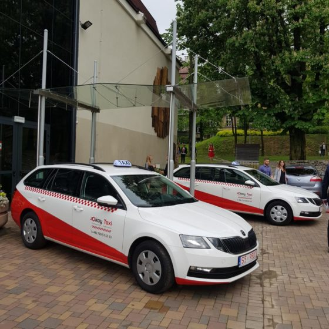
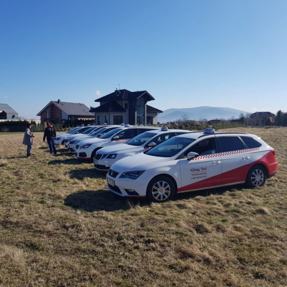
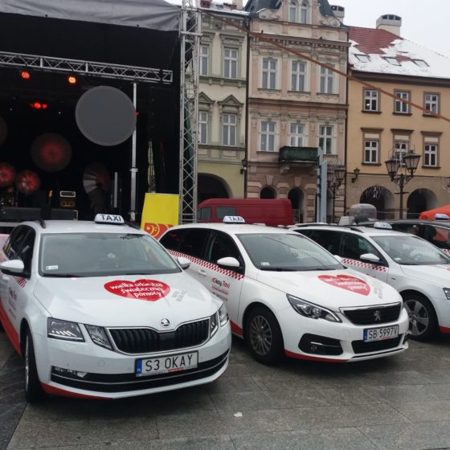
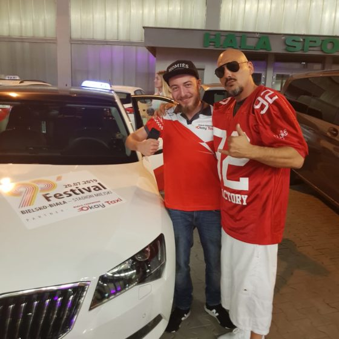
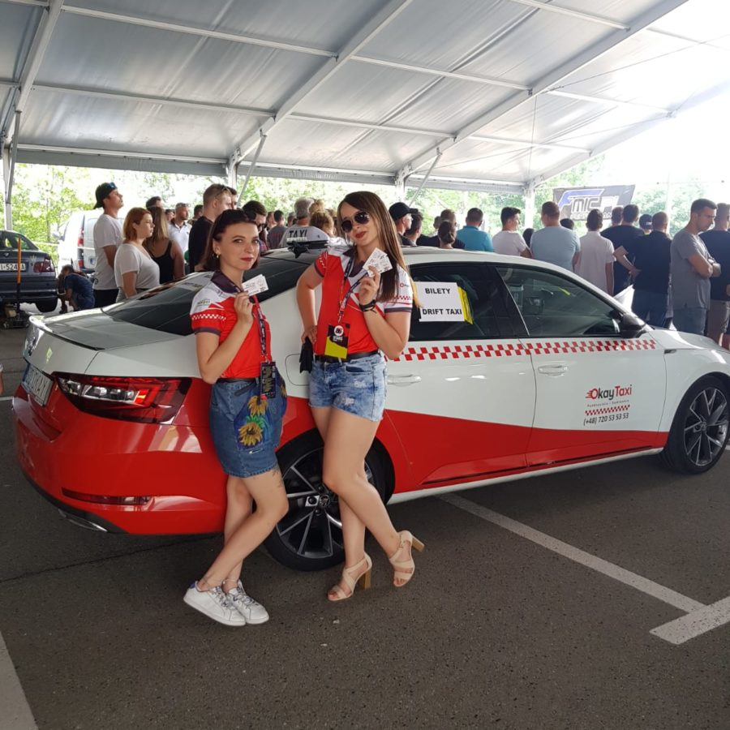
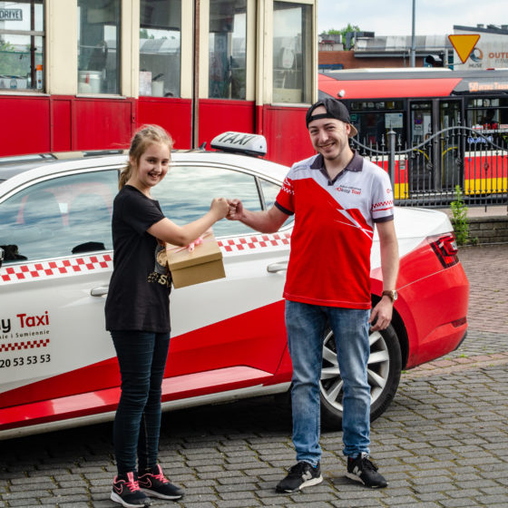
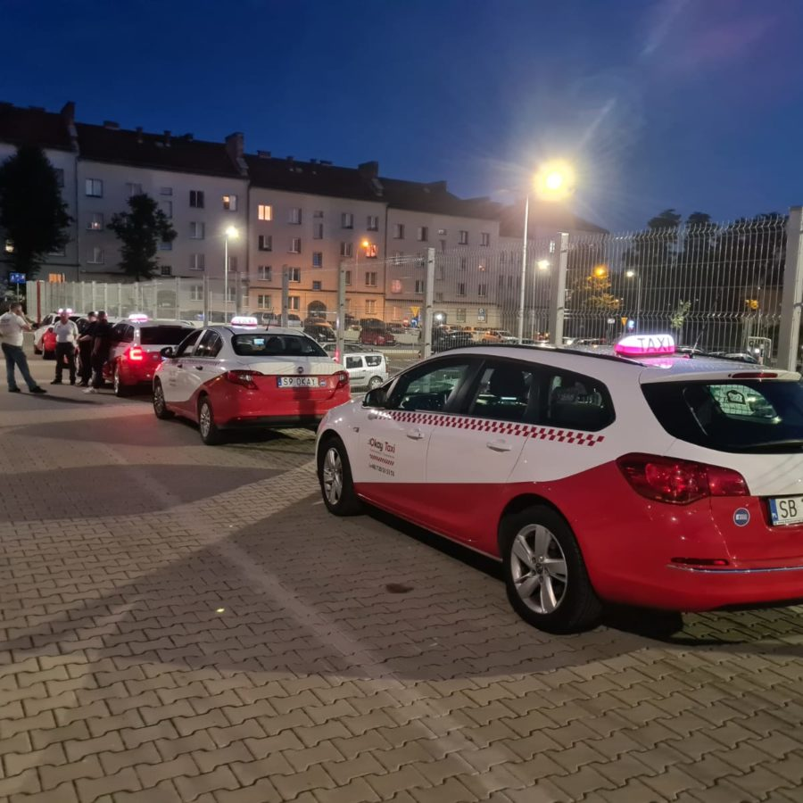
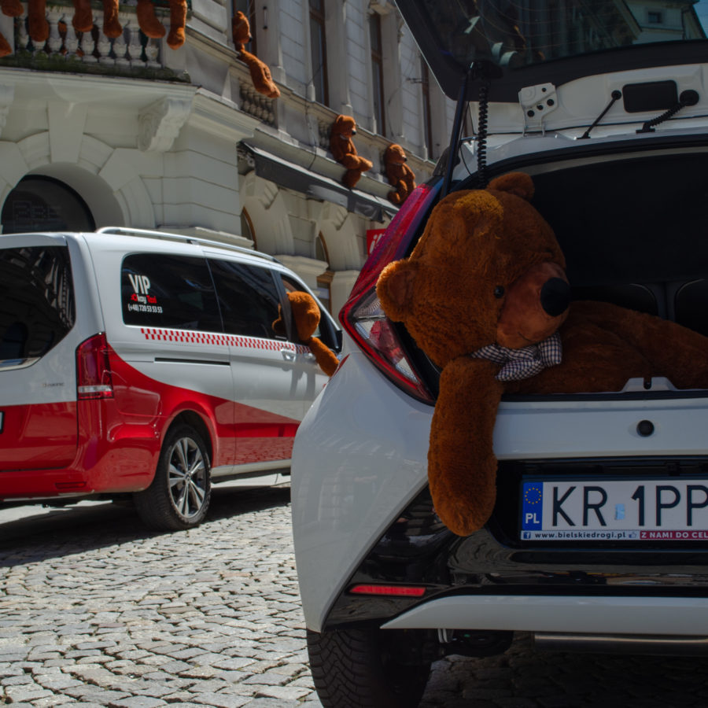

Płatność kartą i aplikacją
Terminal płatniczy w każdej taksówce — Visa, Mastercard, BLIK. Płatność również przez aplikację mobilną Okay Taxi na iOS i Android. Gotówka oczywiście też.

Ponad 100 białoczerwonych taksówek, 22 lata doświadczenia w przewozach VIP i zespół pozytywnych ludzi, którzy wyznaczają najwyższe standardy usług taksówkarskich na Podbeskidziu.
Okay Taxi powstało 1 czerwca 2018 roku na bazie wieloletniego doświadczenia i obserwacji potrzeb klientów VIP, których przewozem zajmujemy się od 22 lat.
Efektem jest zespół pozytywnych ludzi, którzy tworzą nową jakość i wyznaczają najwyższe standardy usług taksówkarskich na terenie całego Podbeskidzia. Dziś obsługujemy 17 miast — od Bielska-Białej przez Cieszyn i Oświęcim po Szczyrk, Wisłę i Żywiec.
Nasze białoczerwone taksówki to nie tylko transport — to marka rozpoznawalna na ulicach regionu, synonim niezawodności i profesjonalnej obsługi.
Sięgamy po najnowsze rozwiązania na rynku — zarówno dla klientów indywidualnych, jak i partnerów biznesowych.
Terminal płatniczy w każdej taksówce — Visa, Mastercard, BLIK. Płatność również przez aplikację mobilną Okay Taxi na iOS i Android. Gotówka oczywiście też.
Dowóz i odbiór dzieci ze szkoły, zajęć pozalekcyjnych i treningów. Foteliki dziecięce na życzenie. Bezpieczeństwo najmłodszych pasażerów to nasz priorytet.
Przewozimy Twojego pupila — do weterynarza, na spacer, na wakacje. Pojazdy przystosowane do transportu zwierząt domowych w bezpiecznych warunkach.
Rozliczenia bezgotówkowe dla firm, obsługa hoteli, zakładów pracy, restauracji i placówek medycznych. Faktury zbiorcze VAT, dedykowane konta firmowe, indywidualne warunki.
Partner wielu wydarzeń masowych: Projekt 86 Stars Show, 90'Festival, Rap Attack Festival, FashionPhilosophy, wybory Miss Polski i Miss Polonia. Obsługujemy eventy, imprezy i konferencje.
Wspieramy lokalne inicjatywy: Psia Ekipa, Wielka Orkiestra Świątecznej Pomocy i wiele innych. Współpracujemy z Galerią Sfera, Teatrem Polskim, Casinos Poland i Hotel Cubus.
Okay Taxi to flota ponad stu nowoczesnych, wygodnych i bezpiecznych samochodów w charakterystycznych czerwono-białych barwach, znajdujących się pod stałym monitoringiem GPS.
Za kierownicą siedzą profesjonalni, kulturalni i pomocni kierowcy, posługujący się językiem angielskim — gotowi obsłużyć zarówno mieszkańców, jak i turystów odwiedzających Podbeskidzie.

Biało-czerwone Okay Taxi to kompletna usługa transportowa — od codziennych przejazdów po logistykę i obsługę VIP.
Zamówimy i dostarczymy Twoje zakupy pod drzwi. Idealne, gdy nie masz czasu na wyjście do sklepu.
Dostarczymy Twój bagaż na dworzec, lotnisko lub hotel. Transport rzeczy osobistych szybko i bezpiecznie.
Odbierzemy i dostarczymy paczki, dokumenty i przesyłki na terenie Bielska-Białej i okolic.
Odbiór gości z lotnisk Katowice-Pyrzowice, Kraków-Balice i Wiedeń-Schwechat. Monitoring opóźnień lotów, stała cena ustalona przed podróżą.
22 lata doświadczenia w obsłudze klientów VIP. Dyskrecja, punktualność i komfort na najwyższym poziomie.
Programy bezgotówkowe dla firm — dedykowane konta, faktury zbiorcze VAT, raportowanie przejazdów i indywidualne warunki cenowe.
Nowoczesnych pojazdów w charakterystycznych biało-czerwonych barwach, pod stałym monitoringiem GPS.
Lata doświadczenia w przewozach VIP — od 2002 roku obsługujemy najbardziej wymagających klientów.
Miast na Podbeskidziu — od Cieszyna po Oświęcim, od Szczyrku po Żywiec. Cały region.
Dostępność — 24 godziny na dobę, 7 dni w tygodniu, 365 dni w roku. Bez przerw.
Współpracujemy z wiodącymi firmami i instytucjami w regionie Podbeskidzia — hotelami, galeriami handlowymi, teatrami i organizatorami wydarzeń.
Galeria Sfera, Hotel Cubus, Casinos Poland, restauracje i placówki medyczne — obsługujemy firmy w ramach programów bezgotówkowych i transportu pracowników.
Teatr Polski w Bielsku-Białej, Projekt 86 Stars Show, 90'Festival, Rap Attack Festival, FashionPhilosophy — jesteśmy oficjalnym partnerem transportowym wielu imprez.
Psia Ekipa, Wielka Orkiestra Świątecznej Pomocy, wybory Miss Polski i Miss Polonia — wspieramy inicjatywy społeczne i angażujemy się w życie regionu.







Okay Taxi zostało założone 1 czerwca 2018 roku w Bielsku-Białej. Firma powstała na bazie 22 lat doświadczenia w przewozach VIP i obserwacji potrzeb wymagających klientów na Podbeskidziu.
Okay Taxi dysponuje flotą ponad 100 nowoczesnych pojazdów w charakterystycznych biało-czerwonych barwach. Wszystkie samochody są wyposażone w klimatyzację, terminale płatnicze, ładowarki USB i wideorejestatory oraz znajdują się pod stałym monitoringiem GPS.
Okay Taxi obsługuje 17 miast na Podbeskidziu: Bielsko-Biała, Czechowice-Dziedzice, Kozy, Szczyrk, Jasienica, Cieszyn, Oświęcim, Wisła, Ustroń, Żywiec, Skoczów, Andrychów, Wadowice, Kęty, Wilkowice, Milówka i Międzybrodzie Żywieckie. Realizujemy też transfery na lotniska Katowice-Pyrzowice, Kraków-Balice i Wiedeń-Schwechat.
Tak, kierowcy Okay Taxi posługują się językiem angielskim. Dzięki temu obsługujemy zarówno polskich pasażerów, jak i turystów odwiedzających Podbeskidzie — Szczyrk, Wisłę, Ustroń czy Bielsko-Białą.
Tak, Okay Taxi jest oficjalnym partnerem transportowym wielu wydarzeń w regionie: 90'Festival, Projekt 86 Stars Show, Rap Attack Festival, FashionPhilosophy, wybory Miss Polski i Miss Polonia. Obsługujemy również konferencje, imprezy firmowe i eventy prywatne.
Okay Taxi to więcej niż taxi. Oferujemy: zamówienie i dostarczenie zakupów, dostarczenie bagażu na dworzec lub lotnisko, odbiór przesyłek i dokumentów, dowóz i odbiór dzieci ze szkoły, transport zwierząt, przewozy VIP oraz współpracę bezgotówkową dla firm z fakturami zbiorczymi VAT.
Okay Taxi współpracuje z Galerią Sfera, Teatrem Polskim w Bielsku-Białej, Casinos Poland, Hotel Cubus oraz wieloma hotelami, restauracjami i placówkami medycznymi w regionie. Firma wspiera również inicjatywy społeczne — Wielką Orkiestrę Świątecznej Pomocy i Psią Ekipę.
Okay Taxi to korporacja białoczerwonych taksówek z siedzibą w Bielsku-Białej, założona 1 czerwca 2018 roku. Firma powstała na bazie 22 lat doświadczenia w przewozach VIP i obserwacji potrzeb wymagających klientów. Efektem jest zespół pozytywnych ludzi, którzy tworzą nową jakość na rynku usług taksówkarskich na Podbeskidziu.
Flota Okay Taxi liczy ponad 100 nowoczesnych, wygodnych i bezpiecznych samochodów w charakterystycznych czerwono-białych barwach, znajdujących się pod stałym monitoringiem GPS. Kierowcy są profesjonalni, kulturalni, pomocni i posługują się językiem angielskim.
Korporacja obsługuje 17 miast na Podbeskidziu i oferuje szeroką gamę usług: transport pasażerski 24/7, transfery lotniskowe (Katowice-Pyrzowice, Kraków-Balice, Wiedeń-Schwechat), dowóz i odbiór dzieci ze szkoły, transport zwierząt, dostarczanie zakupów i bagażu, odbiór przesyłek oraz przewozy VIP.
W zakresie współpracy biznesowej Okay Taxi obsługuje hotele, zakłady pracy, restauracje i placówki medyczne. Wśród partnerów: Galeria Sfera, Teatr Polski w Bielsku-Białej, Casinos Poland i Hotel Cubus. Firma jest oficjalnym partnerem transportowym wydarzeń: 90'Festival, Projekt 86 Stars Show, Rap Attack Festival, FashionPhilosophy, Miss Polski i Miss Polonia.
Okay Taxi angażuje się społecznie — wspiera Psią Ekipę, Wielką Orkiestrę Świątecznej Pomocy i inne lokalne inicjatywy. Płatności: gotówka, karta Visa/Mastercard, BLIK, aplikacja mobilna. Zamów taxi: 720 535 353.